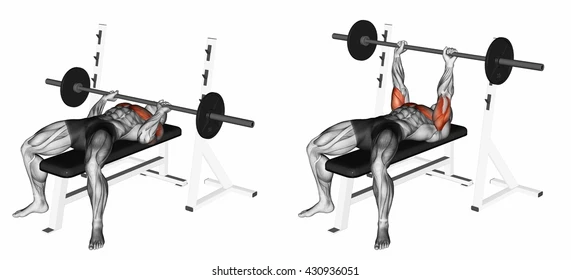
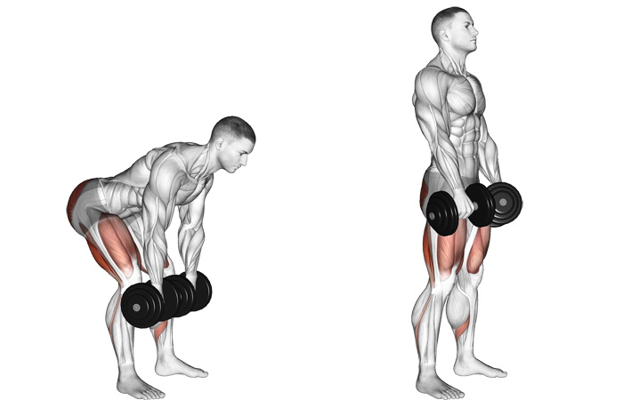
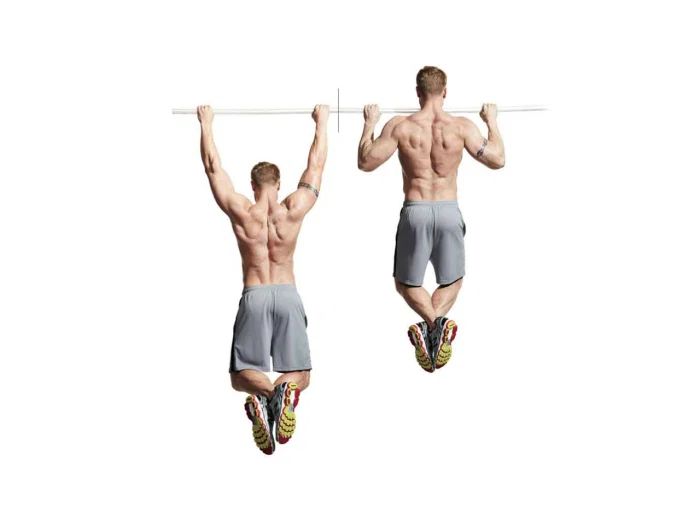

Whether you are looking for stronger biceps or to up your cardio game, setting a fitness goal or benchmark to
reach
is essential. For some people, that goal is "get a six pack"—but this can be easier said than done if you
don't have
a smart, trainer-backed program to get there.
Let's be upfront: Developing six-pack abs is not easy, or necessarily possible for everyone. The first thing
to know is that not all of the factors that influence whether or not you can actually see your abs are under
your control. For example, body composition (or the ratio of body fat to lean muscle mass you have) is
impacted by diet and exercise, sure, but also genetics. Plus, belly fat, in particular, can be impacted by
hormones such as cortisol, a.k.a. the stress hormone. In fact, stress has been linked to higher levels of
abdominal fat in non-medically overweight women, according to research.
Assuming your diet, training, and genetics support the goal (and where you are starting from), Costello says noticing
six-pack abs would mean safely shedding 1 to 2 percent body fat per month until your desired body fat percentage is
achieved.
(1) Barbell Hip Thrust
(1) The best bodyweight exercise you can do to build stronger glutes is the glute bridge, and so it naturally follows
that the best weighted exercise you can do for them involves a similar thrust of the hips.
That’s more or less what the hip thrust is, a glute bridge with weights, though you also have your shoulders raised.
The finer points of technique are always more important when heavy weights are involved, so don’t skip the full
explanation of the exercise below.
Sit on the ground with a bench behind you, bending your knees so your feet are planted on the ground and holding a
barbell resting below your hips. If you have a padded bar, or anything you can slip in between the bar and your
body, it will go a long way to making the exercise more comfortable.
Lean back so your shoulders are on the bench and position the bar above your hips. Drive your hips up lifting the
bar. In the top position your knees should be bent at 90° and your shoulders should be near the top of the bench,
with your body forming a straight line between them. Pause at the top of the lift and squeeze your glutes, then
lower your hips slowly.
It’s worth trying the moving without any weight at first and making sure that you’re feeling the exercise mainly in
your glutes, rather than your thighs or lower back.
Barbell Hip Thrust
(2) Bench Press
If you don't have access to a specialized bench press rack, a standard flat bench can be used. You can also do bench
presses with dumbbells or a barbell. Whichever you choose, be sure to select the appropriate weight for you.
Draw your shoulder blades back behind you to keep from pressing with rounded shoulders.
Grasp the barbell using an overhand grip, placing your thumbs on the outside of your closed fist. Your arms are
slightly wider than shoulder-width apart and the angle of your upper arms is about 45 degrees to the body.
Remove the barbell from the rack, locking your elbows. (Don't move the bar in an arc from the rack directly to the
chest position.)
Inhale while lowering the bar to your chest, at the nipple line.
Exhale as you press the bar above your chest, extending your arms. Don't watch the bar—focus on the ceiling.
Lower the bar so it is just above your chest. This is the starting position for the next bench press.

Bench Press
(3) dumbbell Dead-lifts
Learning how to deadlift with dumbbells at home is a valuable addition to your fitness regime, whether you're a complete novice or a committed weightlifter. Typically, deadlifts are associated with big, heavy barbells at the gym. While that's one way to lift, you can also split things up and deadlift with smaller weights like the best adjustable dumbbells and best kettlebells, making them more accessible for home use.
According to studies collected by Harvard University, deadlifts improve mobility and balance in adults, ensuring you’ll stay fit and active for longer. That's because this dynamic weightlifting move will lengthen the muscles in your legs, keeping you more flexible, as well as working all the muscles you need to propel yourself forward when walking, jogging and even simply bending from the waist. As we get older, our muscles shorten, so keeping that range of motion is vital.
Pick up a pair of dumbbells with an overhand grip and hold them in front of your sides. Stand with your knees slightly bent, and your feet placed shoulder-width apart.
Bend at the hips and knees, lowering your torso until it’s almost parallel with the floor.
Allow your arms to hang down in front of your knees and shins. Make sure you keep your back in a neutral position, taking care not to round it. You should lower yourself into position slowly, in a controlled manner.
From this position, stand up straight without changing the shape of your back. Famatumi recommends squeezing your glutes as you straight, pushing through the ball and heel of your foot. That’s one rep.
Take your time over your reps – if you’re holding onto the dumbbells throughout, your muscles will still be getting a workout.

Barbell Hip Thrust
(4) Master Pull-Up
You probably don’t need us to tell you that the pull-up is just about the toughest bodyweight exercise there is. If you’ve ever attempted to knock out a set in the gym, or just pull yourself up over a wall out in the real world, you’ll know the demands it places on your back, shoulder and arm muscles.
“It’s the ultimate test of upper-body muscular strength and one of the very few bodyweight moves that works your back and biceps,” says former Royal Marines PTI Sean Lerwill. “A lot of guys get fixated on their bench press best, but I think your total pull-ups effort is a far better indicator of a strong, stable and functionally fit upper body that has real-world performance capability.”
Leap up and grip the bar with your hands shoulder width apart and your palms facing away from you. Hang with your arms fully extended, you can bend your legs at the knee if they’re dragging on the ground.
Keep your shoulders back and your core engaged throughout. Then pull up. Focus on enlisting every upper body muscle to aid your upward endeavours.
Move slowly upward until your chin is above the bar, then equally slowly downward until your arms are extended again.
Aim for 10 pull-ups, but be prepared to fall short.
Inhale while lowering the bar to your chest, at the nipple line.
Exhale as you press the bar above your chest, extending your arms. Don't watch the bar—focus on the ceiling.
Lower the bar so it is just above your chest. This is the starting position.

Master Pull Ups
(5) Squats
The squat is considered a compound movement, meaning it works multiple muscle groups across multiple joints. The primary muscles involved in the movement are your quadriceps (the muscles in the front of your thighs) and your glutes (your butt muscles), Tamir says. On the eccentric part of the move, or the lowering portion of the squat, the muscles in your hamstrings and your hip flexors fire too. Squats also work the muscles around the knee, which helps build strength and prevent injury, he says.
“Your abdominals are stabilizers,” he says. “So they assist in weight-bearing movements.” Strong core muscles are important because not only do they help you with your lifts, but they also reduce the risk of lower back pain.
Before you squat, you should get in proper squat position: Keep your feet about shoulder-width apart, Tamir says. There’s no set rule for exact positioning of your feet—it’ll vary depending upon anatomical differences—but a good guideline is for them to turn out anywhere between 5 and 30 degrees.
Dialing your feet into the ground helps engage your muscles, improve alignment, and create stability with the ground, says Tamir. It’ll also help keep your arches from collapsing, which can make your knees more likely to cave inward when you squat.
Your upper body also matters for squats. “Keep your chest up, your chest proud,” says Tamir. This will prevent your shoulders and upper back from rounding—a common mistake—which could overstress your spine, especially if you are squatting with weight on your back.
Pause when you reach parallel.
As for when you should stop the move? There’s lots of discussion about how low you should squat, but the average exerciser should shoot to hit parallel depth with their squats.
Some people have difficulty getting to parallel because of lack of mobility or injury. If that’s the case, easing off the weight and performing the full range of motion for the move is optimal.
Barbell Hip Thrust
(6) Suspended Push-Up
The suspended push-up is a bodyweight pushing exercise performed on a suspension strap system or gymnastic rings. It targets the chest, shoulders, and triceps, but is also challenging to the core and upper back. It can work in traditional strength and muscle-building rep ranges or for higher reps.
Instability from rings increases challenge to pectorals and triceps
Simple way to make push-ups more difficult and perform them in lower rep rang
It may not be flashy, but science says that the push-up is still one of the most dependable exercises in your regimen's arsenal.
Suspended pushups are a more advanced version of the traditional pushup that strengthens the chest, shoulders, and triceps. Performing the exercise from the suspended position more actively engages the core throughout the range of motion.
Keep your shoulders back and your core engaged throughout. Then pull up. Focus on enlisting every upper body muscle to aid your upward endeavours.
Attach the TRX securely to a bar. Grab the handles with an overhand grip and set yourself up in pushup position so that your body forms a straight line from your shoulders to your ankles.
Keeping your core tight, slowly lower yourself towards the floor. Keep your elbows tucked closely by your sides so they make a 45-degree angle with your torso. Pause, then push back up to the starting position.
Keep your core tight and back flat throughout the movement.
Pause at the bottom for one second and then press your body back up.
Do not let the elbows flare out. Keep the elbows close to your sides throughout.